山形県天童市 辻蕎麦
山形手打ち蕎麦
完全手打ち、挽きたて、打ちたての味を
急速冷凍技術でご自宅へ
ここが「極み」
- 厳しく選んだ玄蕎麦を使用。
- 蕎麦の挽き方は「極荒挽き」と「石挽き」の2種類で配合。
- 殻ごと「石挽きによる挽きぐるみ」による深い味わい。
- 完全手打ちの少量生産。
- 江戸前の辛汁とはまた違う、繊細な蕎麦の風味を活かすつゆ。
- 急速冷凍の技術を使って、挽きたて、打ちたてのおいしさを全国にお届け。
かつて松尾芭蕉が＜奥の細道＞を記す旅の中、道中の羽黒山（山形県鶴岡市）で「そば切りを食した」という記録が残っているほど、古くから蕎麦に慣れ親しんできた山形は、豊かな自然環境と昼夜の寒暖差という、蕎麦づくりの好適条件に恵まれた県でもあります。 長野に続く蕎麦王国としても知られ「蕎麦好きなら、一度は食べてみたい」ともいわれる＜山形蕎麦＞。
その「挽きたて・打ちたて・茹でたて」の本場の山形蕎麦の味を、ご自宅で味わっていただくことができるのが、この「辻蕎麦」です。
「鮮度が命」「打ってから一日が風味や味わいの限界」とも言われる生蕎麦は「挽きたて・打ちたて」を即、茹でて食べてこそ本当の味わいですが、ご自宅で茹でて召し上がるために、現在流通している一般の生蕎麦では保存料など、食品添加物を使うのがあたりまえとなっています。 そんな中「食品添加物を一切使わずに、挽きたて・打ちたて 本当の山形の蕎麦の味を届けたい」という想いから、この「辻蕎麦」は生まれました。
玄蕎麦（蕎麦の実）の選定から、季節や温度・湿度に応じて最適な味わいを生みだすための挽きわけ、配合まで徹底的にこだわった山形の手打ち蕎麦を、最新の急速冷凍技術を用いることで保存料を使用することなく、そのままご自宅にお届けいたします。
その本物の味わいは、全国の“蕎麦通”に高く評価され、数多くの一流ホテルや料亭からも引く手あまたの逸品です。この機会にぜひお試しください。
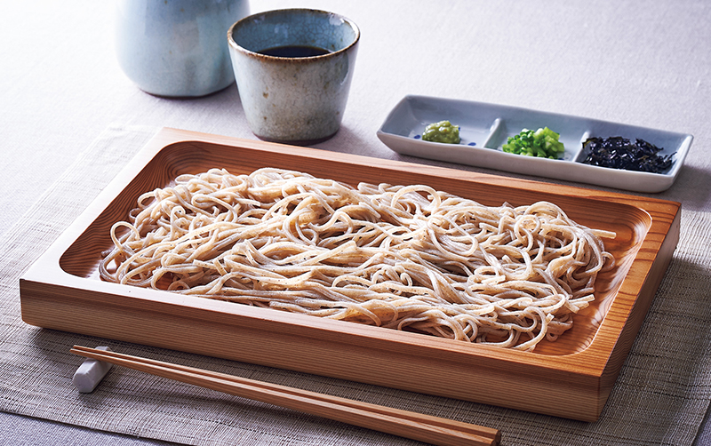
日本の極み 辻蕎麦 山形県天童市
瞬間急速冷凍で、挽きたて・打ちたての
生蕎麦の風味・味わいを「眠らせて」お届け
玄蕎麦（蕎麦の実）の選定、挽き、水回しと捏ね、伸ばしと畳み、切り、茹でと、極めてシンプル工程だからこそ、そのひとつひとつが、味わい、喉越し、風味を大きく左右する、非常に繊細で奥深い仕事です。
しかし、どんな名人が打った蕎麦でも、その風味や香りは打ちあがった時から刻々と損なわれてしまいます。つまり、どんな名店の蕎麦であっても、その本当の風味や味わいをご自宅で再現することは不可能といわれていました。
そんな常識を打ち破り、本当に美味しい繊細な山形蕎麦の「挽きたて・打ちたて」の味を、山形に来ずともご自宅でも味わってほしいという思いを強く抱いた、辻蕎麦の代表・辻輝彦氏が独自に研究を重ねた結果、たどり着いたのが瞬間急速冷凍という保存方法でした。
この技術により、お届けした、瞬間冷凍で「眠らせた」状態の生蕎麦を、ゆっくりと解凍し「目覚めた」状態に戻してから茹でていただくことで「挽きたて・打ちたて」の本場の山形蕎麦の風味や味わいを、そのままご自宅でお楽しみいただけます。
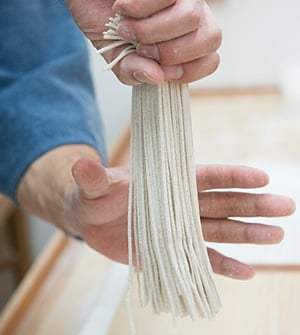
無添加の本物の生蕎麦だから楽しめる通をも唸らせる蕎麦湯
「辻蕎麦」の魅力は、打ちたての風味を瞬間急速冷凍で「眠らせて」届く鮮度はもちろんですが、なんといっても蕎麦そのものの味わいです。
輝彦氏の蕎麦へのこだわりと、その想いを継ぎ、山形蕎麦の名店＜蝋燭庵（あかしあん）＞で修行を積んだ長男・辻一彦氏の技。
その親子二人三脚で生み出す、無添加・完全手打ちの山形蕎麦「辻蕎麦」では、厳選された国内産の玄蕎麦（蕎麦の実）を砕くように挽く極荒挽きと、石挽きによる２系統・５種類に挽き分けた蕎麦粉を勘と経験に基づき、打つたびに理想の配合で使用します。
手づくりだからできる、その微妙な配合が、噛むほどに溢れる甘みと香り、そして絶妙な風味と喉越しと評価の高い、季節を越えても変わらない「辻蕎麦」の味を守り生みだしているのです。
そんな「辻蕎麦」が通受けする理由のひとつが、実は蕎麦湯。ご自宅で蕎麦を茹でて美味しい濃厚な蕎麦湯ができたことがありますか？ 蕎麦湯とは、茹でたときに蕎麦から溶け出すたんぱく質や、旨み成分、さらにルチン、ビタミンB1、B2などが豊富に含まれた、蕎麦の風味や栄養素が溶け込んだいわば蕎麦のシチュー。蕎麦つゆを割って飲むもよし、焼酎で割って飲むもよし、蕎麦好きにはたまらない一品です。
しかし同じ茹で蕎麦でも塩分を含んだ乾麺や茹で麺では、蕎麦湯はできません。茹で汁を濃厚な風味溢れる本物の蕎麦湯としてお召し上がりいただけることも、「辻蕎麦」の品質を裏付ける証でもあるのです。
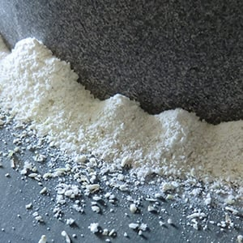
【こだわり その1】
経験と勘で調整する２系統５種の蕎麦粉
おいしい蕎麦の条件は“香り・喉越し・歯触り”などのよさが挙げられますが、その決め手として、蕎麦粉の挽き方や配合の加減が大きく関係しています。
「辻蕎麦」では、「餅は餅屋、粉は粉屋に」という考えのもと、明治41年創業の老舗＜鈴木製粉所＞の協力のもとで理想とする蕎麦粉作りに取り組み、試行錯誤の末、玄蕎麦（蕎麦の実）を砕くように挽いた＜極粗挽き＞と、製粉時に摩擦熱が出ない、昔ながらの＜石臼挽き＞いう2系統の挽き方を採用し、さらにそれぞれの挽き加減で合計５種類の蕎麦粉のありように至りつきました。
例えば「辻蕎麦」がこだわった＜極粗挽き＞では、噛むほどに引き出される蕎麦本来の甘みと香りを、そして＜石臼挽き＞では、殻ごと挽いたりふるいをかけたりと数種類の粉に挽き分け、独特の舌触りやうまみを生み出します。
それらの蕎麦粉を「辻蕎麦」が目指す理想の味わいである、歯切れの良さと舌触り、噛んだときの甘さと、鼻に抜ける香りが絶妙にバランスする“透明感と味わいのある蕎麦”として仕立てるために、仕上り具合や季節ごとの温度や湿度の違いに応じ、勘と経験に基づき細やかに配合を調整することで、機械打ちではできないデリケートな味わいを生みだし、守り続けることができるのです。
手づくりの少量生産だからできる、この徹底した味へのこだわりこそ、多くのリピーターに愛される「辻蕎麦」の秘密なのです。
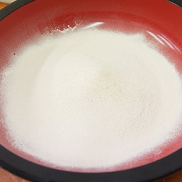
【こだわり その2】
地元・山形を中心に最高の玄蕎麦を厳選
きれいな水と空気、豊かな自然、昼夜の寒暖差など、蕎麦の生育に欠かすことのできない条件に恵まれた山形は、蕎麦の作付面積で全国2位、収穫量では全国４位を誇る、まさに蕎麦の名産地です。しかし、いくら名産地といっても、常に良い玄蕎麦（蕎麦の実）が収穫できるとは限らず、気温や天候など、その年の気象条件によって、玄蕎麦の出来具合も、大きく左右されてしまいます。
挽き方や配合の工夫により理想の蕎麦粉を生み出すことができても、その原材料である玄蕎麦自体の品質がよくなければ、まったく意味がありません。そこで「辻蕎麦」では、山形に限らず、北海道なども含めた国内の各産地の状況を常に把握し、さらには、実際に収穫前の蕎麦畑に出向いて生育状態を調べ、その年、いちばん状態のよい玄蕎麦を厳選し、入手することに力を注いでいます。
【こだわり その3】
こだわりの蕎麦にあわせたオリジナルのつゆ
こだわりの風味と喉越しをお楽しみいただくために、つゆにもこだわり、かつお節、しいたけ、昆布の出汁をふんだんに使った自家製の山形蕎麦ならではのストレートタイプの麺つゆをセットでお届けいたします。旨みたっぷりの、比較的甘めのつゆにたっぷりつけてお召し上がりください。
レビュー
開封から味わいまで、
美食の専門家が徹底レビュー！
自宅で茹でるおそばで今まで感じたことのない高級感。大切な人にも分けてあげたくなる極上の味
ハーブ料理研究家若井めぐみさん
-
待ちわびたお蕎麦が到着！！早速開けてみると・・・
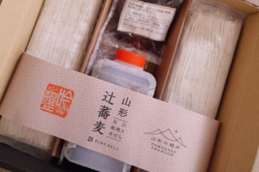
-
まず驚いたのがそのお蕎麦の艶！繊細な麺の１本１本がキラキラと輝いています。
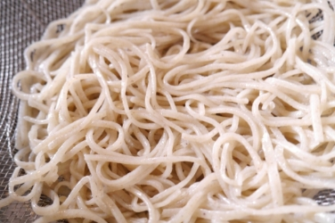
-
こちらのお蕎麦を使って私流の簡単なアレンジレシピを２つご紹介させていただきますね
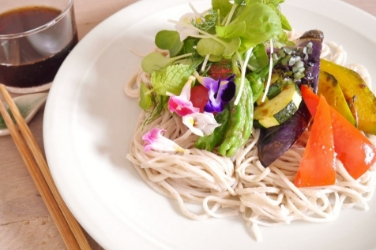
-
素材の良さを引き出して、丁寧に作られたまさにお店の味！
主張しすぎない上品な味わいでありながら、香りの高さとコシのある歯ごたえは存在感十分。

フードライター＆栄養士藤岡智子 さん
-
シックで落ち着いたデザインの箱が現われました。
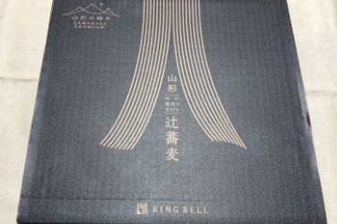
-
打ち立てのような新鮮な蕎麦に驚きです。妥協しないこだわりも伝わってきます。
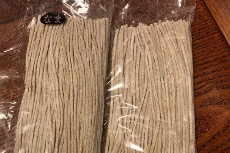
-
そばつゆと海苔まで添えられています。色つやのよい海苔とそばつゆです。
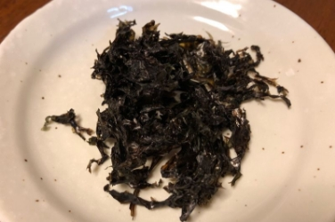
-
蕎麦の実を極粗挽きしているので、蕎麦の風味も強く、芳醇な味わい。噛むと、旨みと甘みを感じます。
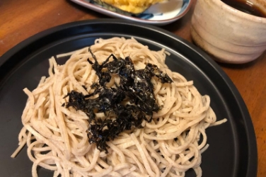